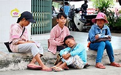

Trẻ em cần được học hành – không phải lao động cực nhọc!
Giới thiệu
Lao động trẻ em là một vấn nạn nghiêm trọng tại nhiều quốc gia đang phát
triển. Thay vì được học tập và vui chơi, hàng triệu trẻ em phải lao động
trong điều kiện khắc nghiệt để phụ giúp gia đình hoặc bị bóc lột bởi các
chủ lao động. Chiến dịch này nhằm nâng cao nhận thức cộng đồng và kêu
gọi hành động để xóa bỏ lao động trẻ em.
Thực trạng
Ước tính có hơn 160 triệu trẻ em đang lao động trên toàn thế giới,
trong đó 79 triệu trẻ làm việc trong môi trường nguy hiểm.
Tại Việt Nam, trẻ em ở vùng sâu vùng xa thường xuyên phải bỏ học để đi
làm sớm.
Nhiều trẻ em bị bóc lột trong các ngành như: xây dựng, nông nghiệp,
may mặc, bán hàng rong...
Tác hại
Gây ảnh hưởng nghiêm trọng đến sự phát triển thể chất và tinh thần.
Làm mất đi cơ hội học tập, phá hủy tương lai của trẻ.
Làm tăng nguy cơ bị xâm hại, bạo lực, tai nạn lao động.
Ảnh hưởng tiêu cực đến phát triển bền vững của xã hội.
Giải pháp
Tăng cường thực thi pháp luật bảo vệ trẻ em khỏi lao động sớm.
Đẩy mạnh tuyên truyền giáo dục trong cộng đồng, trường học.
Hỗ trợ kinh tế cho các gia đình nghèo để trẻ không phải lao động.
Tăng cường sự hợp tác giữa nhà nước, tổ chức xã hội và người dân.
Tư liệu truyền thông
Dưới đây là hình ảnh:

Liên hệ
Nếu bạn phát hiện trường hợp bóc lột lao động trẻ em, hãy lên tiếng: